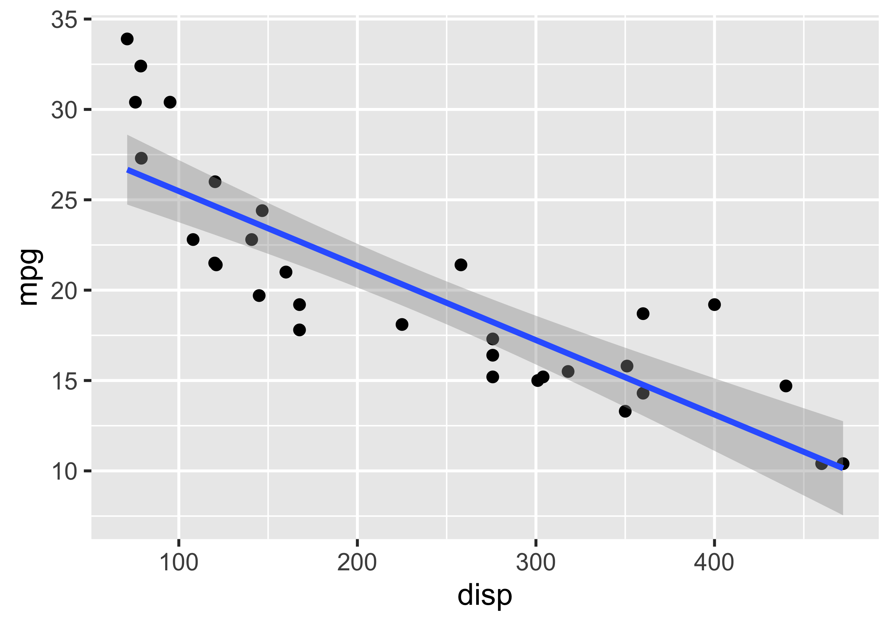
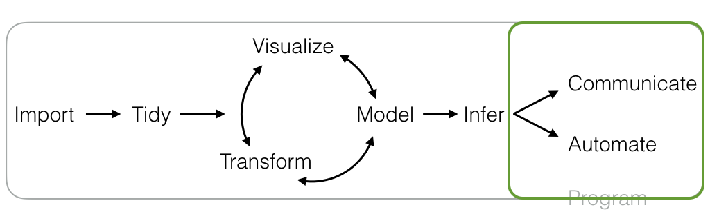

mtcars |>
ggplot() +
aes(x = disp, y = mpg) +
geom_point() +
geom_smooth(method = 'lm', formula = "y ~ x")
Joseph V. Casillas, PhD
Rutgers University
Last update: 2025-05-04
You have learned how to version control this process!
You have learned how to version control this process!
So what is version
So what is version
This means we write code in a way that clearly documents what we did.
Instead of writing code with the purpose of telling the computer what to do, we write code that tells other humans what we told the computer to do and why.
Importantly, we don’t separate our code from the report/essay/manuscript we are writing. Everything is together, in a single document (usually).

In this class you have learned to…
manage version controlled research projects
in a way that facilitates collaboration and honesty
get and tidy data
transform and visualize your data
fit statistical models to your data and test hypotheses
communicate your results using literate programming
This is reproducible research
Frequentist

Data Science for Linguists
| joseph.casillas@rutgers.edu | |
| @jvcasill | |
| @jvcasillas |